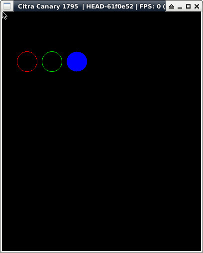

參考資訊：
https://libctru.devkitpro.org/index.html
https://github.com/devkitPro/3ds-examples
main.c
#include <stdio.h>
#include <stdlib.h>
#include <SDL.h>
#include <SDL_gfxPrimitives.h>
int main(void)
{
SDL_Surface *screen = NULL;
SDL_Init(SDL_INIT_VIDEO);
screen = SDL_SetVideoMode(400, 240, 16, SDL_HWSURFACE);
circleRGBA(screen, 50, 100, 20, 0xff, 0x00, 0x00, 0xff);
aacircleRGBA(screen, 100, 100, 20, 0x00, 0xff, 0x00, 0xff);
filledCircleRGBA(screen, 150, 100, 20, 0x00, 0x00, 0xff, 0xff);
SDL_Flip(screen);
SDL_Delay(3000);
SDL_Quit();
return 0;
}
完成
